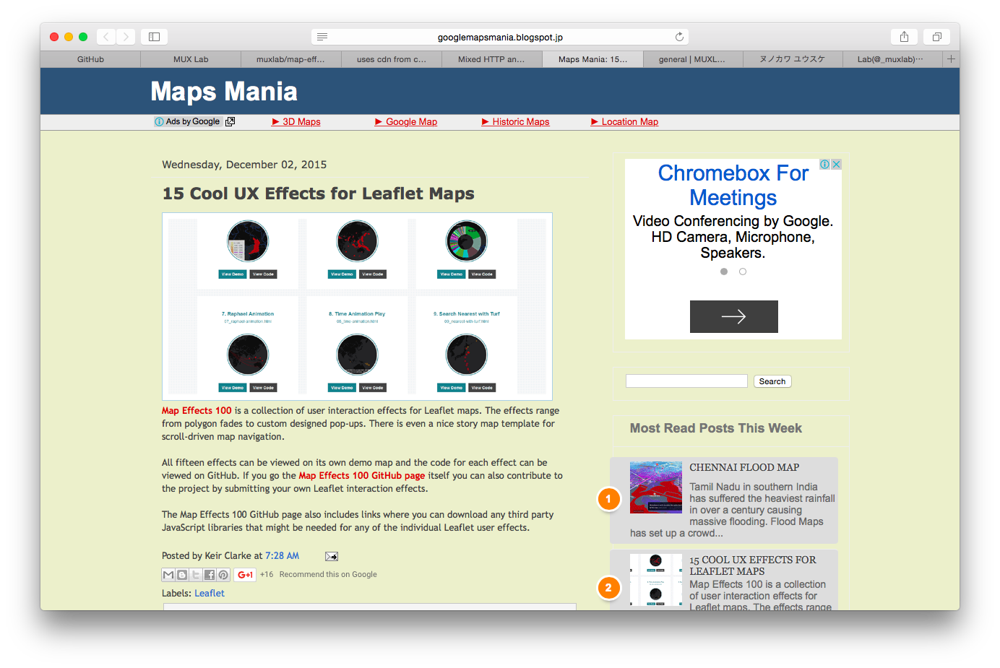
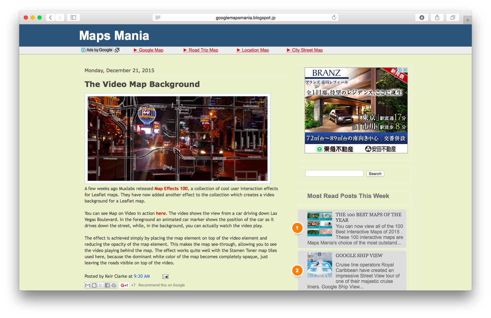
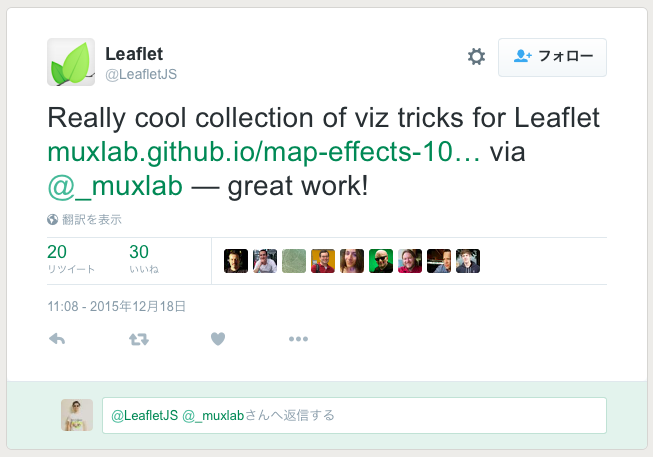
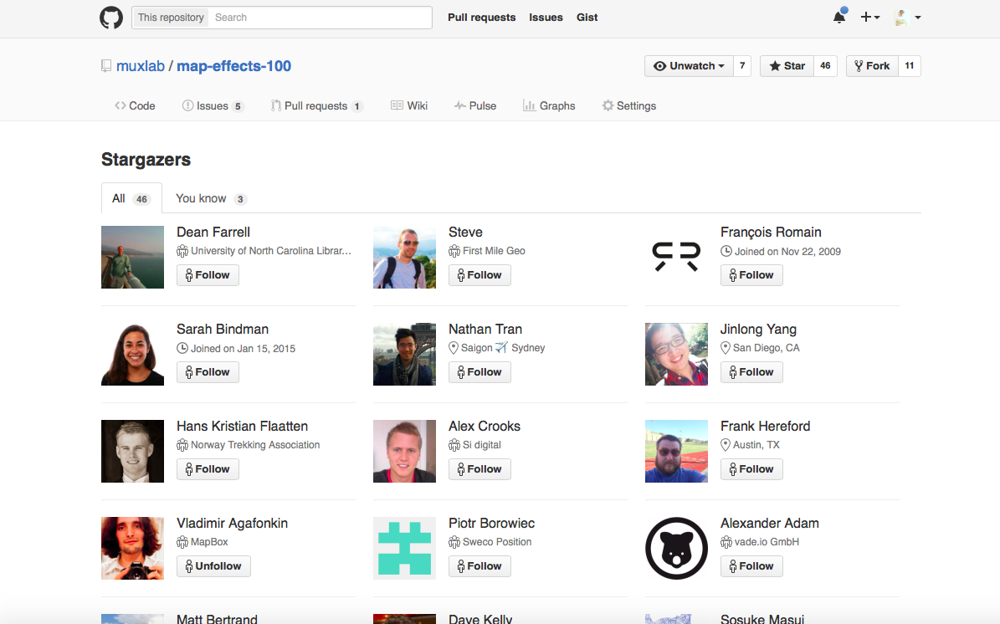
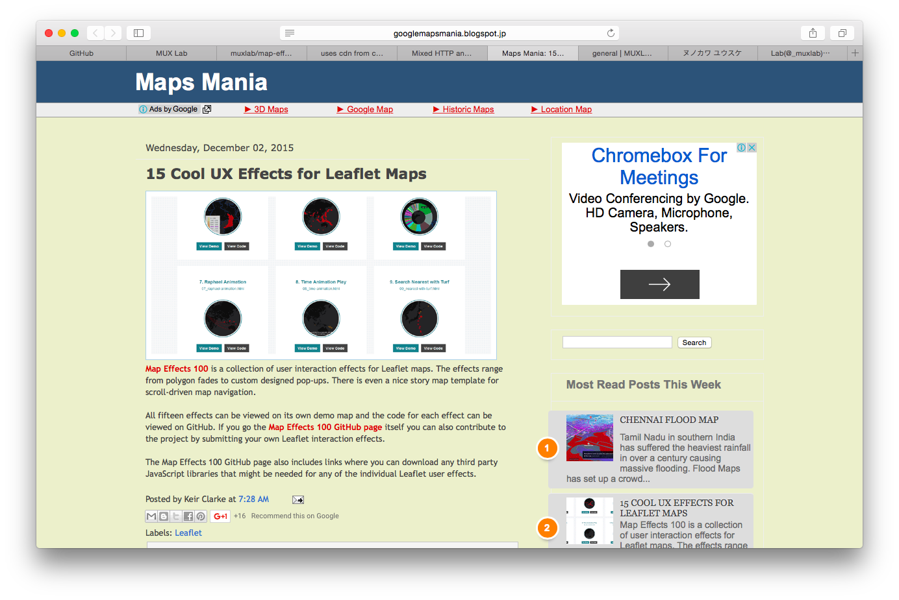
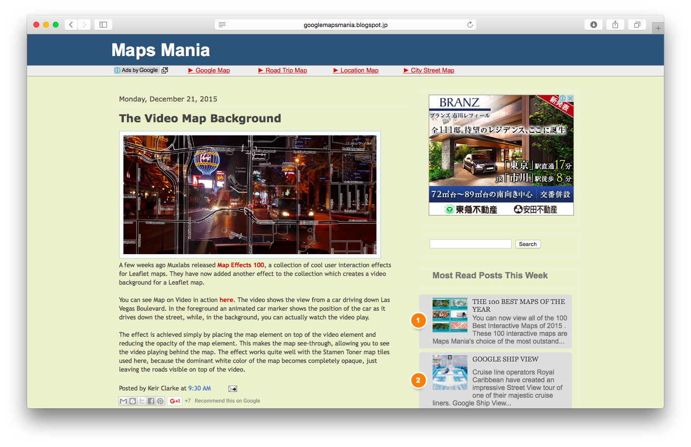
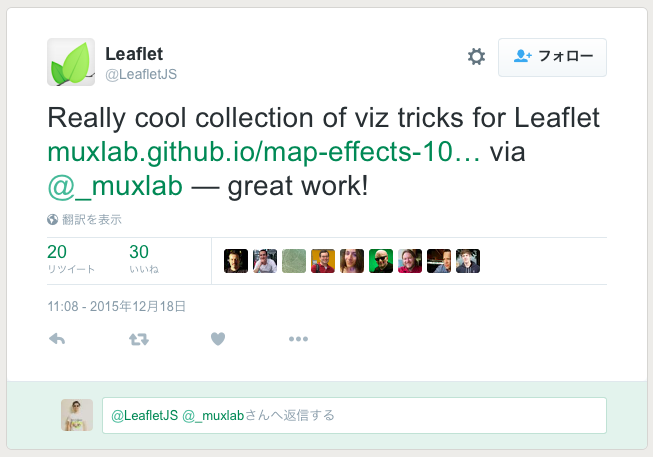
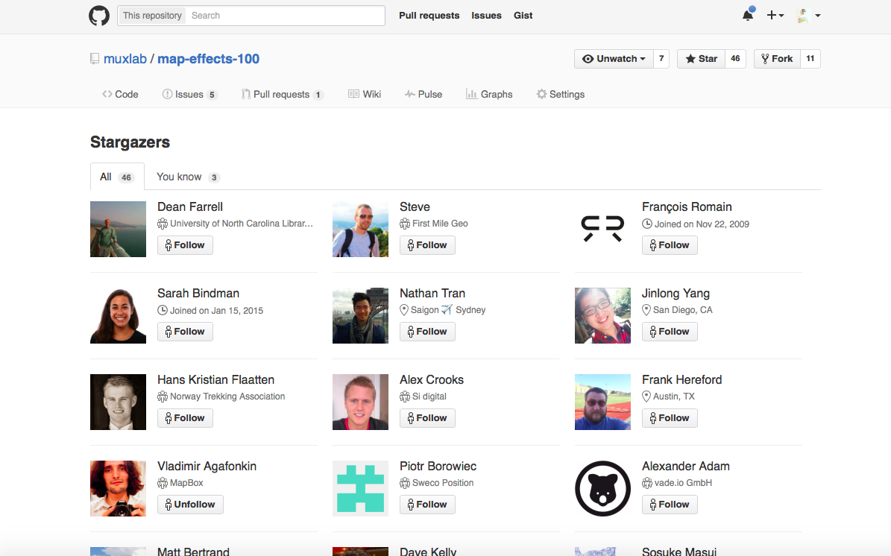

# What is
MUX Lab?
[https://ynunokawa.github.io/presentations/2016-what-is-muxlab/]()
## 自己紹介
 - ヌノカワ ユウスケ ([@_ynunokawa](https://twitter.com/_ynunokawa))
- 地図が得意な Web Developer
- 本職は某 GIS ベンダーの API / 開発者向けサービスのプロダクト マネジメント
- UX とかデザインへの興味が果てしない
- 絶賛育児中！(休日の融通がきかない＝フットワークが重い)
## [MUX Lab](https://muxlab.github.io/)?
- OSS の地図表示用 JavaScript ライブラリ Leaflet に一目惚れ
- 技術力向上と OSS 活動に興味があった
- プルリクする勇気がなかったのでプルリクしてもらう側になってみようと考える
- Leaflet を使った地図表現の実験を行ってます
- ヌノカワ ユウスケ ([@_ynunokawa](https://twitter.com/_ynunokawa))
- 地図が得意な Web Developer
- 本職は某 GIS ベンダーの API / 開発者向けサービスのプロダクト マネジメント
- UX とかデザインへの興味が果てしない
- 絶賛育児中！(休日の融通がきかない＝フットワークが重い)
## [MUX Lab](https://muxlab.github.io/)?
- OSS の地図表示用 JavaScript ライブラリ Leaflet に一目惚れ
- 技術力向上と OSS 活動に興味があった
- プルリクする勇気がなかったのでプルリクしてもらう側になってみようと考える
- Leaflet を使った地図表現の実験を行ってます
(__MUX = Map UX__ という造語)
- 昨年の11月に開始
- 始めてまもなく [Maps Mania](http://googlemapsmania.blogspot.jp/2015/12/cool-ux-effects-for-leaflet-maps.html) に掲載されてバズる
- ヨーロッパのエンジニアが開発に参加してくれた
- 興味ある人は気軽に Join してね c⌒っ.ω.)っ
## プロジェクト
[map-effects-100](https://github.com/muxlab/map-effects-100)
- 気持ちいい地図を 100 コ作るプロジェクト
 [geojson-catalog](https://github.com/muxlab/geojson-catalog)
- GitHub に置いてる GeoJSON を一括閲覧
[geojson-catalog](https://github.com/muxlab/geojson-catalog)
- GitHub に置いてる GeoJSON を一括閲覧
 [pm-mapper](https://github.com/muxlab/pm-mapper) & [pm-sync-controller](https://github.com/muxlab/pm-sync-controller)
- 地図でプロジェクション マッピングするためのツール
[pm-mapper](https://github.com/muxlab/pm-mapper) & [pm-sync-controller](https://github.com/muxlab/pm-sync-controller)
- 地図でプロジェクション マッピングするためのツール
 [map-chatter](https://github.com/muxlab/map-chatter)
- 地図上でチャット (Facebook でログイン)
[map-chatter](https://github.com/muxlab/map-chatter)
- 地図上でチャット (Facebook でログイン)
 ## I ♥ CSS3
地図上のグラフィックでいろいろやってるのだが、SVG の操作は JavaScript に頼らず CSS3 だけでいろいろできたりして楽しい。
- [animation](https://developer.mozilla.org/en-US/docs/Web/CSS/CSS_Animations/Using_CSS_animations)
- [transition](https://developer.mozilla.org/en-US/docs/Web/CSS/CSS_Transitions/Using_CSS_transitions)
## なぜかバズる
Maps Mania: 15 Cool UX Effects for Leaflet Maps

Maps Mania: The Video Map Background (2回目)

Leaflet 作者に Twitter で褒めてもらう

Leaflet ♥ me

おまけ：GUNMA GIS GEEK 清水さんにも拾ってもらう
## 最近の悩み
## 最近の悩み
- コントリビューターが増えない (スターだけが増えていく)
- Leaflet フレンドが欲しい (日本語で Leaflet の話がしたい)
- Leaflet 勉強会とか Meetup とかやりたい (コミュニティ作りたい)
- Fab もやりたい (詳しい人いる？)
## Thanks!
[https://ynunokawa.github.io](https://ynunokawa.github.io)
※この Web スライドは [ahomu/Talkie - GitHub.com](https://github.com/ahomu/Talkie) を使って作ってます。
[Top](#1)
## I ♥ CSS3
地図上のグラフィックでいろいろやってるのだが、SVG の操作は JavaScript に頼らず CSS3 だけでいろいろできたりして楽しい。
- [animation](https://developer.mozilla.org/en-US/docs/Web/CSS/CSS_Animations/Using_CSS_animations)
- [transition](https://developer.mozilla.org/en-US/docs/Web/CSS/CSS_Transitions/Using_CSS_transitions)
## なぜかバズる
Maps Mania: 15 Cool UX Effects for Leaflet Maps

Maps Mania: The Video Map Background (2回目)

Leaflet 作者に Twitter で褒めてもらう

Leaflet ♥ me

おまけ：GUNMA GIS GEEK 清水さんにも拾ってもらう
## 最近の悩み
## 最近の悩み
- コントリビューターが増えない (スターだけが増えていく)
- Leaflet フレンドが欲しい (日本語で Leaflet の話がしたい)
- Leaflet 勉強会とか Meetup とかやりたい (コミュニティ作りたい)
- Fab もやりたい (詳しい人いる？)
## Thanks!
[https://ynunokawa.github.io](https://ynunokawa.github.io)
※この Web スライドは [ahomu/Talkie - GitHub.com](https://github.com/ahomu/Talkie) を使って作ってます。
[Top](#1)